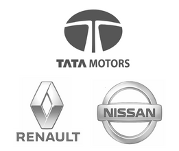
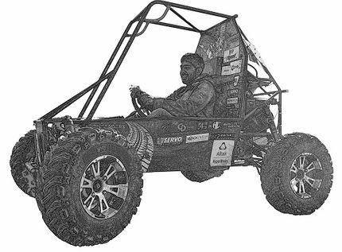
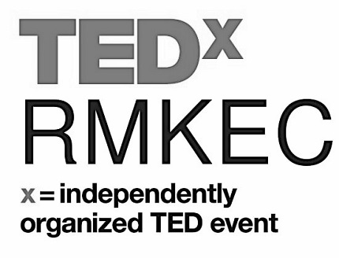
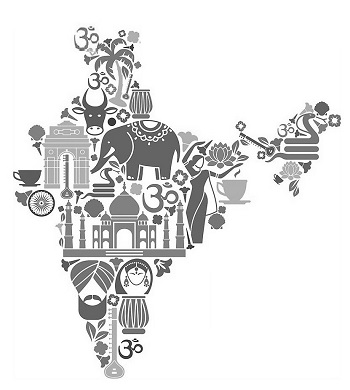

A Program Management professional with a mechanical engineering perspective, aspiring to work on cutting-edge tech products that revolutionize the way we live, work, travel, shop, communicate, socialize, recover from ailments, etc.
Turbo Energy Private Limited.
Enabled business growth at Victorious Future and Turbo Energy Private Limited.
Enabled business growth at Victorious Future and Turbo Energy Private Limited.
Managed business relationships with fortune 500 companies: Tata Motors & Renault Nissan.


An Engineer before everything else…
Studied surface characteristics of additive manufacturing specimens, Created Mathematical models for surface finishing processes, Developed forecasting models using data analytics tools, Worked with the Indian Railways and Optimized designs to address the structural issues in rolling stocks, Designed a novel completely mechanized antilock braking system, Designed and Fabricated a full-scale All-Terrain Vehicle.
I strongly resonate with the idea of TED as the platform promotes the exchange of ideas, sparks conversations, and inspires people to solve global issues. I initiated and organized TEDx RMKEC, the first-ever TEDx event at my college as I felt that the student community would greatly benefit from such an empowering platform.

"Nobody ever figures out what life is all about, and it doesn’t matter. Explore the world. Nearly everything is really interesting if you go into it deeply enough.
— Richard P. Feynman
I love giving back...
I was incredibly lucky to turn my passion for helping the society by working with various NGOs. Over the last eight years, I have been participating in several volunteering activities such as teaching and mentoring underprivileged children, organizing book donation camps, tree plantation drives, marathons and awareness campaigns.
Love to Travel
Have travelled throughout India. Love trekking and exploring new cuisines.

When the weather turns bad and staying out is not an option,